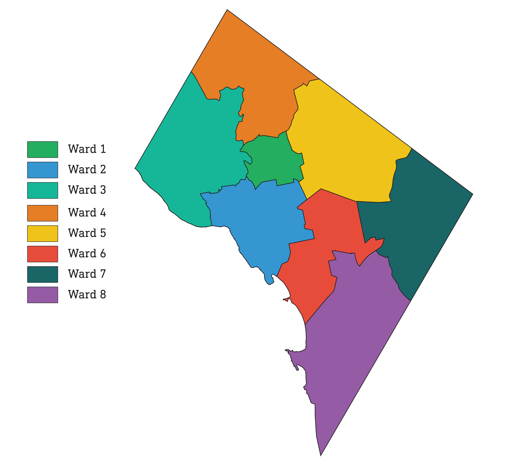
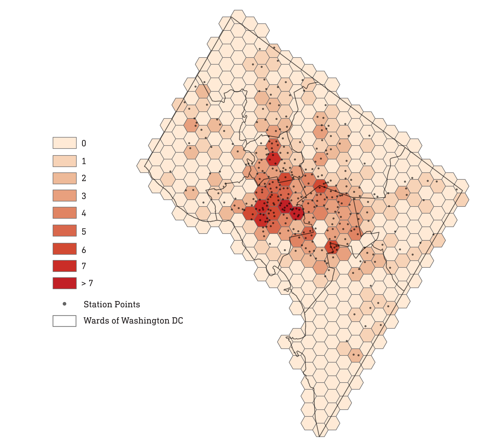
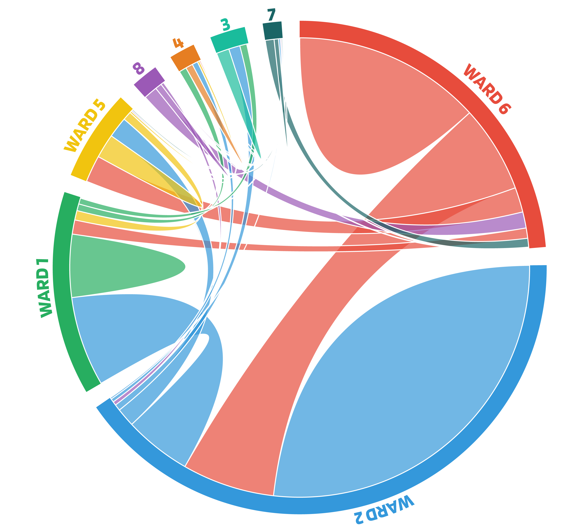
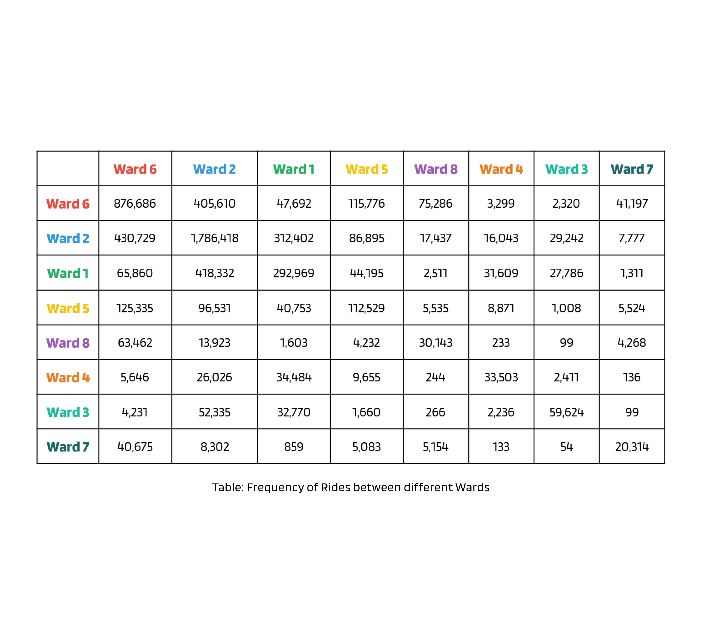

Capital Bikeshare Rides by Wards 2021 to 2023
Administrative Wards of Washington DC

Bike Stations Density Map

Stations Per Administrative Units
Cord Diagram showing Frequency of Trips among Wards

